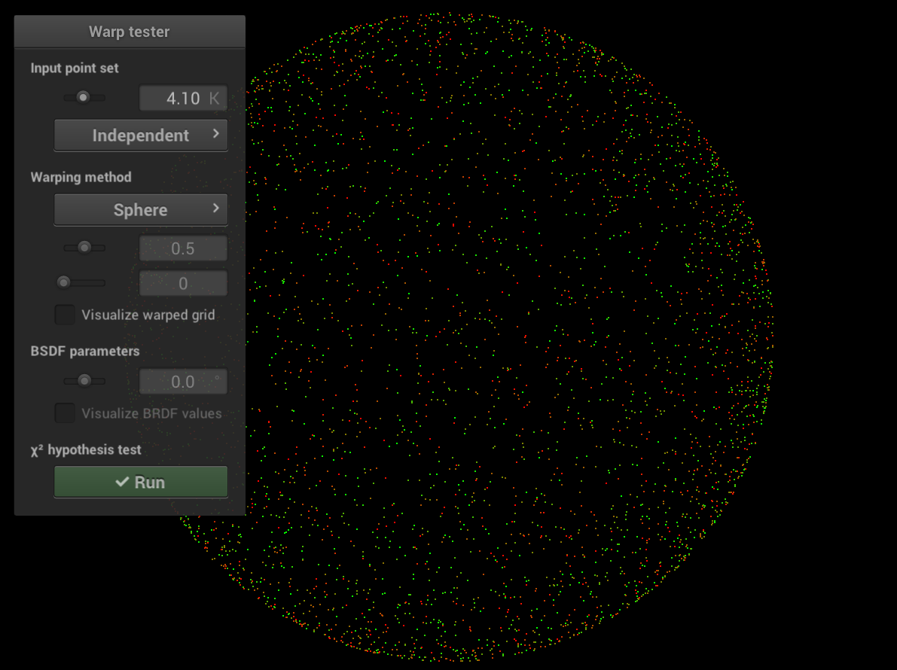
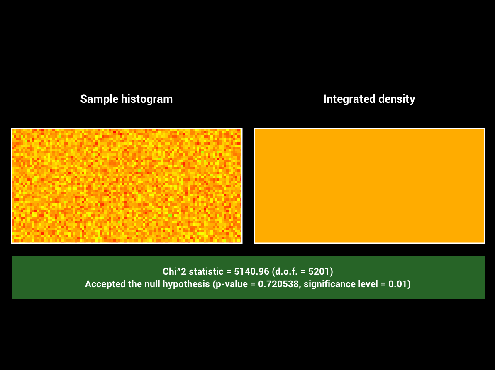
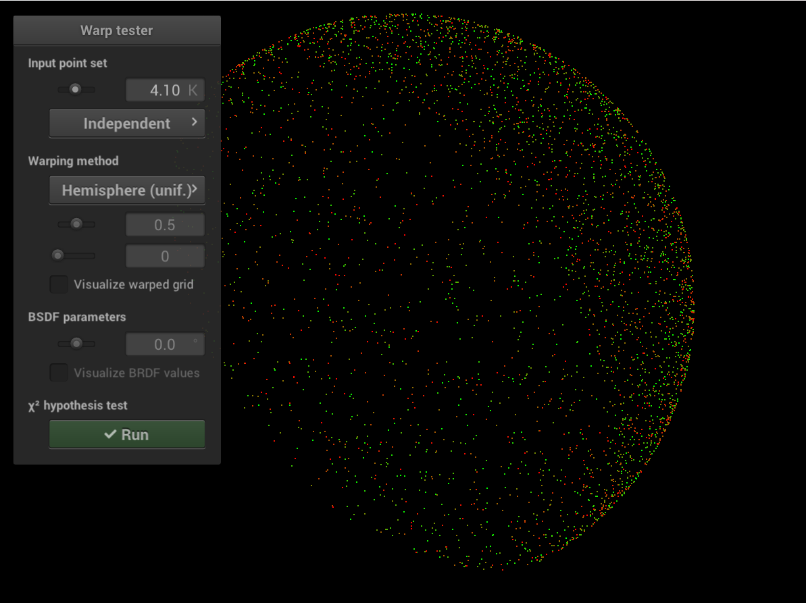
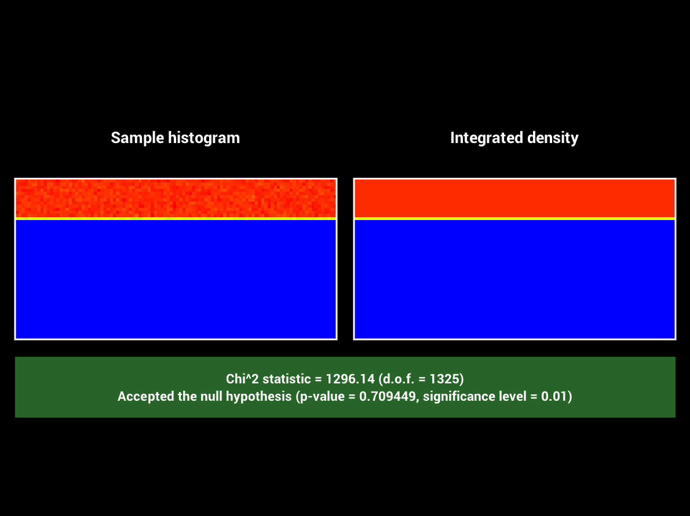
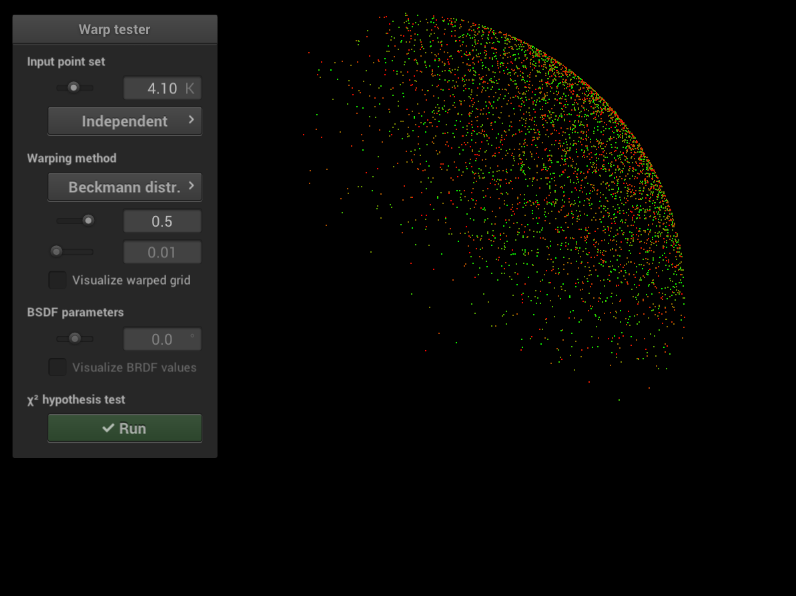

**$\chi^2$ Hypothesis Test Outcome:**
# Square to Uniform Hemisphere **Time spent on this task: 1min** **Describe your implementation of `Warp::squareToUniformHemisphere` and the associated PDF.** Uniform hemisphere is a special case of uniform spherical cap with $\theta_{max}=\frac{\pi}{2}$. See the section of [uniform spherical cap](#SquaretoUniformSphericalCap) for details. For implementation just use functions `squareToUniformSphericalCap` and `squareToUniformSphericalCapPDF` with $\cos\theta_{max}=0$. **Warping Visualization:**
**$\chi^2$ Hypothesis Test Outcome:** # Square to Uniform Spherical Cap **Time spent on this task: 30min** **Describe your implementation of `Warp::squareToUniformSphericalCap` and the associated PDF.** First we calculate the area of the spherical cap $A=\int_{0}^{2\pi}\int_{0}^{\theta_{max}}rd\theta r\sin\theta d\phi= \int_{0}^{2\pi}\int_{0}^{\theta_{max}}\sin\theta d\theta d\phi = 2\pi (1-\cos\theta_{max})$ where we have $r=1$. So the PDF for cartisian coordinates is $p_{c}(x,y,z)=\frac{1}{2\pi (1-\cos\theta_{max})}$ when $z\ge \cos\theta_{max}$, and zero otherwise. We want to use spherical coordinates so let $x = r\sin\theta\cos\phi$, $y = r\sin\theta\sin\phi$ and $z = r\cos\theta$. Then $|J_{T}(r,\theta,\phi)|=\begin{vmatrix} \frac{\partial x}{\partial r} & \frac{\partial x}{\partial \theta} & \frac{\partial x}{\partial \phi}\\ \frac{\partial y}{\partial r} & \frac{\partial y}{\partial \theta} & \frac{\partial y}{\partial \phi}\\ \frac{\partial z}{\partial r} & \frac{\partial z}{\partial \theta} & \frac{\partial z}{\partial \phi} \end{vmatrix}= \begin{vmatrix} \sin\theta\cos\phi & r\cos\theta\cos\phi & -r\sin\theta\sin\phi\\ \sin\theta\sin\phi & r\cos\theta\sin\phi & r\sin\theta\cos\phi\\ \cos\theta & -r\sin\theta & 0 \end{vmatrix}=r^2\sin\theta$, then $p(r,\theta,\phi)=|J_{T}|p_{c}(x,y,z)=\frac{r^2\sin\theta}{2\pi (1-\cos\theta_{max})}$. Since $r=1$, we have $p(\theta,\phi)=\frac{\sin\theta}{2\pi (1-\cos\theta_{max})}$. Then $p(\theta)=\int_{0}^{2\pi}p(\theta,\phi^{\prime})d\phi^{\prime}=\frac{\sin\theta}{1-\cos\theta_{max}}$, $p(\phi | \theta)=\frac{p(\theta,\phi)}{p(\theta)}=\frac{1}{2\pi}$. Then the CDFs $P(\theta)=\int_{0}^{\theta}\frac{\sin\theta^{\prime}}{1-\cos\theta_{max}} d\theta^{\prime}=\frac{1-\cos\theta}{1-\cos\theta_{max}}$ and $P(\phi | \theta)=\int_{0}^{\phi}\frac{1}{2\pi} d\phi^{\prime}=\frac{\phi}{2\pi}$. By inversion method, $\theta=\arccos(1-\xi_{1}(1-\cos\theta_{max}))$ and $\phi = 2\pi \xi_{2}$, where $\xi_{1}$ and $\xi_{2}$ are uniform random variables in $[0,1)$. The points we sample is just $(\sin\theta\cos\phi, \sin\theta\sin\phi, \cos\theta)$. However, it's computationally expensive to calculate these many trigonometric functions for each sample. **A better way** is to use cylindrical mapping. We first sample points on the cylinder surface with radius $R$ and height $1-\cos\theta_{max}$. Let $x = R\cos\phi$, $y = R\sin\phi$ and $z = z$. Then $|J_{T}(R,\phi,z)|=\begin{vmatrix} \frac{\partial x}{\partial R} & \frac{\partial x}{\partial \phi} & \frac{\partial x}{\partial z}\\ \frac{\partial y}{\partial R} & \frac{\partial y}{\partial \phi} & \frac{\partial y}{\partial z}\\ \frac{\partial z}{\partial R} & \frac{\partial z}{\partial \phi} & \frac{\partial z}{\partial z} \end{vmatrix}= \begin{vmatrix} \cos\phi & -R\sin\phi & 0\\ \sin\phi & R\cos\phi & 0\\ 0 & 0 & 1 \end{vmatrix}=R=1$, thus the pdf $p(R,\phi,z)=p_{c}(x,y,z)=\frac{1}{2\pi(1-\cos\theta_{max})}$, which is the inverse of area of the cylinder, when $z\ge \cos\theta_{max}$, and zero otherwise. Thus we can do the naive sampling $z=\cos\theta_{max}+(1-\cos\theta_{max})\xi_{1}$, $\phi=2\pi\xi_{2}$, where $\xi_{1}$ and $\xi_{2}$ are uniform random variables in $[0,1)$. Finally, using Archimedes' Hat-Box theorem, we project the points on the cylinder surface to the spherical cap surface, which will also be uniform. The projected point is $(r\cos\phi, r\sin\phi, z)$, where $r=\sqrt{1-z^2}$. **Warping Visualization:** **$\chi^2$ Hypothesis Test Outcome:**
# Square to Cosine Hemisphere **Time spent on this task: 15min** **Describe your implementation of `Warp::squareToCosineHemisphere` and the associated PDF.** $p_{c}(x,y,z)=\frac{\cos\theta}{\pi}$, where $\cos\theta=z$, for $z\ge 0$, and zero otherwise. $p(\theta, \phi)=|J_{T}|\frac{\cos\theta}{\pi}=\frac{\sin\theta\cos\theta}{\pi}=\frac{\sin 2\theta}{2\pi}$. Then $p(\theta)=\int_{0}^{2\pi}p(\theta,\phi^{\prime})d\phi^{\prime}=\sin 2\theta$, also $p(\phi | \theta)=\frac{p(\theta,\phi)}{p(\theta)}=\frac{1}{2\pi}$. Then the CDFs $P(\theta)=\int_{0}^{\theta}\sin 2\theta^{\prime} d\theta^{\prime} =-\frac{1}{2}\cos 2\theta + \frac{1}{2}$ and $P(\phi | \theta)=\int_{0}^{\phi}\frac{1}{2\pi} d\phi^{\prime}=\frac{\phi}{2\pi}$. By inversion method, $\theta=\frac{1}{2}\arccos(1-2\xi_{1})$ and $\phi = 2\pi \xi_{2}$, where $\xi_{1}$ and $\xi_{2}$ are uniform random variables in $[0,1)$. The points we sample is just $(\sin\theta\cos\phi, \sin\theta\sin\phi, \cos\theta)$. However, there is again **a better way** to do so, which is sampling points on the unit disk and then project them to the hemisphere. We just re-use `squareToUniformDisk` to get a point $(x,y)$ on the unit disk, then we have $z=\sqrt{1-x^2-y^2}$ which is for the projected point $(x,y,z)$ on the hemisphere. **Warping Visualization:** **$\chi^2$ Hypothesis Test Outcome:**

**$\chi^2$ Hypothesis Test Outcome:** # Feedback **Use this section to provide feedback about this assignment (each task, the handout, Nori, etc.). We appreciate your opinions to help improve future homeworks and projects.** Fine. # Supplementary * For each task, please note down the time you spent working through it and use at least a few sentences to describe your implementation. If applicable, also report the problems you encounter (e.g. whether or how it's solved, what is the difficult part). * Please let us know to what extent your code is working (e.g. you only managed to work through part of this assignment, or your solution doesn't operate as expected in some corner cases). We encourage you to share your thinking process, and points will be granted based on your description even if the code is not 100% functioning. * Nori generates both EXR and PNG format output. Please use PNG for image comparison in the report. * This report template uses [Markdeep](https://casual-effects.com/markdeep/), which supports Markdown syntax in HTML file. For example usage, please refer to the [official demo document](https://casual-effects.com/markdeep/features.md.html). * LaTeX is also supported for typing mathematical formulas: $$ L_o(\mathbf{x}, \omega_o) = \int_{\Omega} L_i(\mathbf{x},\omega_i)\, f(\mathbf{x}, \omega_i, \omega_o)\, |\cos\theta_i|\, \mathrm{d}\omega_i $$